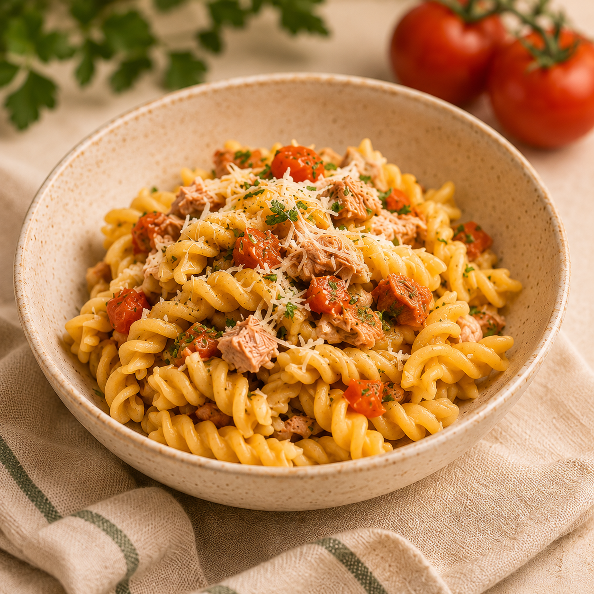
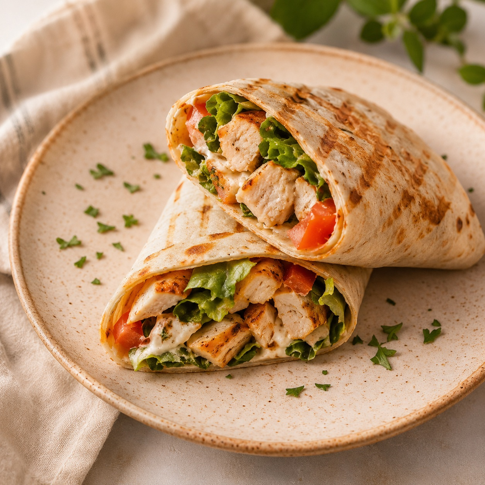
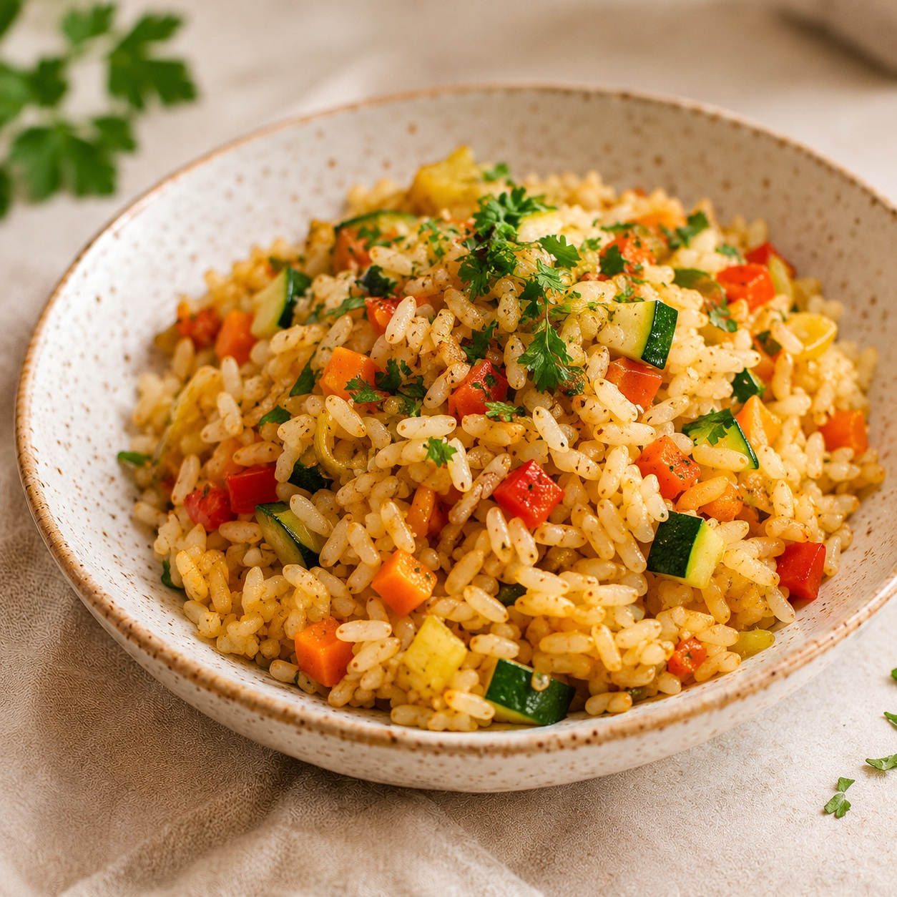

Massa de Atum
15 minutos | 3,50 €
Ver receitaNão tens forno na tua cozinha? Descobre refeições simples e práticas que podes preparar utilizando apenas o fogão ou uma frigideira.

15 minutos | 3,50 €
Ver receita
20 minutos | 4,20 €
Ver receita
15 minutos | 2,80 €
Ver receita